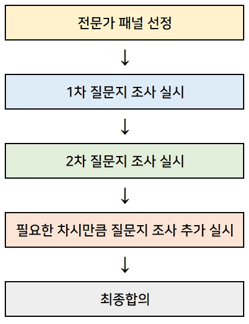

브레인스토밍은 창의적인 아이디어를 도출하기 위한 효과적인 그룹 기법입니다. 특히 실감 미디어와 같은 혁신적인 분야에서 새로운 아이디어를 발굴하는 데 매우 유용합니다.
장점:
다양하고 혁신적인 아이디어를 단시간에 도출할 수 있습니다.
팀원들의 적극적인 참여를 유도하여 집단 지성을 활용할 수 있습니다.
서로 다른 배경을 가진 참가자들의 아이디어가 결합되어 예상치 못한 혁신적 결과를 얻을 수 있습니다.
단점:
아이디어의 질을 즉시 평가하기 어려울 수 있습니다.
일부 참가자가 세션을 지배할 수 있어 균형 있는 참여가 필요합니다.
실현 가능성이 낮은 아이디어가 많이 나올 수 있습니다.
활용 분야:
실감 미디어 콘텐츠 기획
VR/AR 기술의 새로운 응용 분야 발굴
사용자 경험(UX) 개선을 위한 아이디어 도출
실감 미디어 관련 신제품 개발
적용 방법:
비판을 금지하고 자유로운 아이디어 제시를 장려합니다.
양을 중시하며, 많은 아이디어를 도출하는 것을 목표로 합니다.
아이디어의 결합과 개선을 통해 더 나은 아이디어로 발전시킵니다.
브레인스토밍 세션 진행 단계
준비 단계
명확한 주제 설정 (예: "VR을 활용한 새로운 교육 방법")
다양한 배경의 참가자 선정 (기술 전문가, 디자이너, 교육자 등)
편안하고 창의적인 환경 조성
아이디어 발산 단계
모든 아이디어를 환영하는 분위기 조성
시각화 도구 활용 (화이트보드, 포스트잇 등)
타이머 설정으로 집중도 유지 (예: 15-20분)
아이디어 정리 단계
유사한 아이디어 그룹화
아이디어 간 연결점 찾기
실현 가능성과 혁신성 기준으로 분류
아이디어 평가 및 선택 단계
객관적 기준 설정 (기술적 실현 가능성, 사용자 가치 등)
투표 또는 점수 부여 방식으로 우선순위 결정
최종 선택된 아이디어에 대한 간단한 실행 계획 수립
후속 조치
선택된 아이디어의 구체화 및 프로토타이핑 계획
참가자들에게 결과 공유 및 피드백 요청
정기적인 브레인스토밍 세션 계획 수립
실감 미디어 분야에서 브레인스토밍을 효과적으로 활용하려면, 최신 기술 트렌드와 사용자 니즈에 대한 이해를 바탕으로 진행하는 것이 중요합니다. 또한, 기술적 제약사항과 창의적 아이디어 사이의 균형을 잘 맞추는 것이 성공적인 결과를 얻는 데 도움이 될 것입니다.
마인드 맵 작성
아이디어 간의 연관성 파악 및 시각화는 복잡한 아이디어를 구조화하고, 각 아이디어가 어떻게 연결되는지 명확하게 이해할 수 있도록 도와줍니다. 이를 통해 팀원 간의 의사소통을 원활하게 하고, 프로젝트의 방향성을 명확히 할 수 있습니다.
장점: 아이디어를 시각적으로 표현하여 이해하기 쉽고, 창의적인 아이디어 발상을 돕습니다.
단점: 복잡한 아이디어를 표현하기에 한계가 있을 수 있으며, 아이디어의 질을 보장하기 어렵습니다.
활용 분야: 아이디어 발상, 프로젝트 기획, 회의 등 다양한 분야에서 활용 가능합니다.
적용 방법: 중심 주제를 중심으로 아이디어를 뻗어나가는 방식으로 작성하며, 각 아이디어 간의 연결고리를 표시합니다.
마인드 맵 작성 단계
중심 주제 설정: 마인드 맵의 중심에 프로젝트의 주요 주제를 배치합니다.
주요 아이디어 도출: 중심 주제에서 뻗어나가는 주요 아이디어를 작성합니다.
세부 아이디어 추가: 각 주요 아이디어에서 더 세부적인 아이디어를 뻗어나갑니다.
연결고리 표시: 아이디어 간의 관계를 선으로 연결하여 시각적으로 표현합니다.
검토 및 수정: 작성된 마인드 맵을 팀원들과 함께 검토하고 필요한 부분을 수정합니다.
마인드 맵 작성 도구
종이와 펜: 간단하고 빠르게 작성할 수 있습니다.
디지털 도구: XMind, MindMeister, Miro 등 다양한 소프트웨어를 활용하여 디지털 마인드 맵을 작성할 수 있습니다.
XMind 사용 예시
XMind는 다양한 템플릿과 기능을 제공하여 마인드 맵을 효과적으로 작성할 수 있는 도구입니다. 중심 주제와 주요 아이디어를 추가하고, 세부 아이디어를 확장하여 아이디어 간의 관계를 시각적으로 표현할 수 있습니다.
사용 방법
새로운 마인드 맵 생성: XMind 소프트웨어를 실행하고, 새로운 마인드 맵을 생성합니다.
중심 주제 추가: 마인드 맵의 중심에 프로젝트의 주요 주제를 작성합니다.
주요 아이디어 작성: 중심 주제에서 뻗어나가는 주요 아이디어를 추가합니다.
세부 아이디어 확장: 각 주요 아이디어를 클릭하여 더 세부적인 아이디어를 작성합니다.
연결고리 표시: 아이디어 간의 관계를 선으로 연결하여 시각적으로 표현합니다.
검토 및 수정: 작성된 마인드 맵을 팀원들과 함께 검토하고 필요한 부분을 수정합니다.
Miro 사용 예시
Miro는 온라인 협업 도구로, 다양한 템플릿과 기능을 제공하여 팀원들과 함께 마인드 맵을 작성하고 공유할 수 있는 도구입니다. 실시간으로 팀원들과 함께 작업하고 의견을 공유할 수 있습니다.
MindMeister 사용 예시
MindMeister는 온라인 마인드 맵 도구로, 다양한 기능을 제공하여 팀원들과 함께 실시간으로 협업하고 아이디어를 공유할 수 있는 도구입니다. 다양한 템플릿과 디자인 옵션을 활용하여 마인드 맵을 작성할 수 있습니다.
SCAMPER 기법 활용
SCAMPER는 창의적인 문제 해결과 아이디어 발상을 돕기 위한 기법으로, 다음과 같은 7가지 요소로 구성됩니다.
장점: 간단하고 직관적인 방법으로, 다양한 관점에서 문제를 바라볼 수 있습니다.
단점: 구체적인 문제 해결에는 한계가 있을 수 있으며, 아이디어의 질을 보장하기 어렵습니다.
활용 분야: 디지털 미디어, 실감 미디어 등 다양한 분야에서 활용 가능합니다.
적용 방법: 각 단계별로 질문을 던져 아이디어를 도출하고, 이를 통해 새로운 아이디어를 발전시킬 수 있습니다.
주의사항: 자유롭게 아이디어를 발산하는 것이 중요하며, 비판을 삼가하고 모든 아이디어를 수용하는 것이 좋습니다.
Substitute (대체하기)
어떤 요소를 다른 것으로 바꾸어 새로운 아이디어를 도출합니다. 재료, 사람, 프로세스, 장소 등을 대체하여 다양한 변화를 모색합니다.
대체 전략에서는 문제 해결에 필요한 재료, 기술, 프로세스뿐 아니라 다양한 사용자 경험을 위한 요소를 대체할 수 있습니다.
적용 질문
어떤 부분을 다른 것으로 바꿀 수 있을까?
사용되는 재료나 기술을 대체하면 어떻게 될까?`
역할이나 기능을 다른 사람이나 사물로 교체하면?
예시
기술 대체: 기존의 2D 그래픽 대신 3D 그래픽을 도입하여 몰입감을 높입니다.
장소 대체: 오프라인 회의 대신 온라인 화상 회의를 통해 시간과 비용을 절감합니다.
콘텐츠 대체: 기존의 텍스트 기반 콘텐츠 대신 실감미디어를 활용하여 사용자 경험을 향상시킵니다.
플랫폼 대체: 기존의 PC 게임 대신 메타버스 플랫폼을 통해 새로운 게임 경험을 제공합니다.
기술 대체: 기존의 2D 애니메이션 대신 VR/AR 기술을 도입하여 몰입감을 높입니다.
Combine (결합하기)
두 가지 이상의 아이디어, 제품, 서비스를 결합하여 새로운 것을 만듭니다.
적용 질문
어떤 아이디어나 기능을 결합하면 더 나은 결과를 얻을 수 있을까?
다른 팀이나 프로젝트와 협업할 수 있는 부분은?
여러 기술을 함께 사용하면 어떤 새로운 가능성이 열릴까?
예시
VR 기술과 촉각 피드백 기술을 결합하여 다중 감각 실감 체험 콘텐츠 개발
실시간 위치 기반 서비스와 AR 기술을 결합한 몰입형 도시 탐험 게임 제작
블록체인 기술과 인공지능 기술을 결합하여 더욱 안전하고 효율적인 서비스 제공
Adapt (응용하기)
다른 분야나 상황에서 사용되는 아이디어를 현재의 문제에 적용합니다.
적용 질문
다른 산업의 성공 사례를 우리 프로젝트에 적용할 수 있을까?
자연이나 동물의 특성을 모방하여 디자인에 반영할 수 있을까?
유사한 문제를 어떻게 해결했는지 참고할 수 있을까?
예시
의료 교육용 시뮬레이션 기술을 응용하여 실감나는 가상 여행 체험 콘텐츠 개발
자동차 시뮬레이터 기술을 응용한 실감형 우주 비행 체험 콘텐츠 제작
게임 산업의 캐릭터 디자인 기법을 응용하여 교육용 콘텐츠의 캐릭터 디자인 개선
Modify (수정하기)
기존 제품이나 서비스의 특성을 변경하거나 개선합니다. 확대(Magnify)와 축소(Minify)도 포함됩니다.
적용 질문
어떤 부분을 확대하거나 축소할 수 있을까?
색상이나 질감을 변경하면 어떤 효과가 있을까?
기능이나 속도를 조절하여 개선할 수 있을까?
예시
기존 VR 헤드셋의 무게와 크기를 줄여 더 편안한 장시간 사용이 가능한 제품 개발
360도 영상의 해상도를 높이고 프레임 레이트를 개선하여 더욱 선명하고 부드러운 실감 콘텐츠 제작
게임 캐릭터의 디자인을 수정하여 사용자의 선호도에 맞는 캐릭터 개발
기존의 온라인 쇼핑몰의 UI/UX를 개선하여 사용자 경험을 향상시킨 서비스 제공
Put to another use (다른 용도로 사용하기)
기존 제품이나 서비스를 원래 의도와 다른 목적으로 사용합니다
적용 질문
이 요소를 다른 용도로 사용할 수 있을까?
부수적인 기능을 주요 기능으로 바꿀 수 있을까?
폐기물이나 부산물을 활용할 방법이 있을까?
예시
게임용으로 개발된 모션 캡처 기술을 활용하여 실감형 원격 의료 진단 시스템 개발
영화 특수효과 기술을 활용한 실감형 역사 교육 콘텐츠 제작
VR 콘텐츠 제작용으로 개발된 소프트웨어를 교육용 시뮬레이션 프로그램으로 활용
게임 산업에서 사용되는 캐릭터 디자인 기법을 교육용 콘텐츠의 캐릭터 디자인에 활용
VR 기술을 활용하여 실감형 교육 콘텐츠를 제작하는 것이 가능
Eliminate (제거하기)
제품이나 서비스의 불필요한 요소를 제거하여 단순화합니다.
적용 질문
어떤 부분을 제거하면 더 나은 결과를 얻을 수 있을까?
복잡한 기능을 단순화할 수 있을까?
사용자에게 혼란을 주는 요소는 무엇인가?
예시
VR 경험에서 멀미를 유발하는 요소들을 제거하여 더 편안한 사용자 경험 제공
AR 애플리케이션에서 불필요한 UI 요소를 제거하여 더욱 몰입감 있는 경험 제공
온라인 쇼핑몰의 복잡한 결제 프로세스를 단순화하여 사용자의 구매 경로를 간소화
게임 캐릭터의 디자인을 단순화하여 사용자의 시선을 집중시키는 효과적인 캐릭터 개발
Reverse (역전시키기)
기존 요소의 순서나 배치를 바꾸어 새로운 가치를 창출합니다.
적용 질문
프로세스의 순서를 바꾸면 어떤 일이 일어날까?
역할을 바꾸면 새로운 아이디어가 나올까?
반대 상황을 가정하면 어떤 결과가 나올까?
예시
기존의 선형적 스토리텔링 방식을 사용자 선택에 따라 변화하는 비선형적 구조로 재배열하여 인터랙티브 실감 콘텐츠 개발
360도 영상의 시점을 사용자가 자유롭게 전환할 수 있도록 재배열하여 더욱 몰입감 있는 실감 콘텐츠 제작
게임 산업의 캐릭터 디자인 방식을 역전시켜 사용자의 참여를 유도하는 캐릭터 개발
기존의 온라인 쇼핑몰의 UI/UX를 역전시켜 사용자의 구매 경로를 새롭게 디자인하여 편리한 서비스 제공
델파이 기법 활용
델파이 기법은 전문가의 의견을 체계적으로 수렴하여 미래 예측이나 정책 결정 등에 활용하는 방법입니다. 이 기법은 여러 전문가들이 익명으로 의견을 제시하고, 중재자가 이를 종합하여 최종 의견을 도출하는 과정을 거칩니다.
장점: 전문가의 의견을 체계적으로 수렴하여 효과적인 의사결정이 가능합니다.
단점: 시간과 비용이 많이 소요될 수 있으며, 전문가 선정의 편향성이 결과에 영향을 미칠 수 있습니다.
활용 분야: 미래 기술 예측, 정책 결정, 교육과정 개발, 의료 분야의 진단 및 치료 방침 결정, 기업의 중장기 전략 수립 등 다양한 분야에서 활용 가능합니다.
적용 방법: 문제 정의, 전문가 선정, 설문, 분석, 최종 결과 도출, 결과 공유 및 활용의 단계를 거쳐 전문가들의 의견을 종합하여 최종 결론을 도출합니다.
델파이 기법의 특징
익명성: 참여자들의 익명성을 보장하여 자유로운 의견 개진을 촉진합니다.
반복성: 여러 라운드에 걸쳐 의견을 수렴하고 피드백을 제공합니다.
통계적 집단 반응: 개별 의견을 통계적으로 처리하여 집단의 판단을 도출합니다.
통제된 피드백: 각 라운드마다 이전 결과를 공유하여 의견 수렴을 유도합니다.
델파이 기법의 장단점
장점:
전문가의 의견을 체계적으로 수렴하여 효과적인 의사결정이 가능합니다.
익명성으로 인해 자유로운 의견 개진이 가능합니다.
복잡한 문제에 대한 다양한 관점을 얻을 수 있습니다.
단점:
시간과 비용이 많이 소요될 수 있습니다.
전문가 선정의 편향성이 결과에 영향을 미칠 수 있습니다.
중재자의 주관이 개입될 가능성이 있습니다.
델파이 기법의 적용 절차
문제 정의: 의사결정에 필요한 문제를 명확히 정의하고, 목표를 설정합니다.
전문가 선정: 해당 분야의 전문가들을 신중히 선정하고, 익명성을 보장합니다.
1차 설문: 개방형 질문을 통해 전문가들의 의견을 수집합니다.
1차 분석: 수집된 의견을 분석하고 구조화합니다.
2차 설문: 구조화된 설문을 통해 전문가들의 의견을 정량화합니다.
2차 분석: 통계적 분석을 통해 의견을 종합합니다.
3차 설문 및 분석: 필요시 추가 라운드를 진행하여 의견을 수렴합니다.
최종 결과 도출: 전문가들의 의견을 종합하여 최종 결론을 도출합니다.
결과 공유 및 활용: 최종 결론을 관계자들과 공유하고 필요한 조치를 취합니다.

델파이 기법의 활용 분야
미래 기술 예측 및 평가
정책 결정 및 평가
교육과정 개발
의료 분야의 진단 및 치료 방침 결정
기업의 중장기 전략 수립
델파이 기법은 실감 미디어 개발을 위한 아이디어 도출에도 효과적으로 활용될 수 있습니다. 예를 들어, VR/AR 기술의 미래 발전 방향 예측, 사용자 경험 개선을 위한 핵심 요소 도출, 새로운 실감 콘텐츠 아이디어 발굴 등에 적용할 수 있습니다.
실감 미디어에서의 활용 방법
미래 기술 예측: VR/AR 기술의 발전 방향 예측을 위해 전문가들의 의견을 수렴하여 미래 기술 트렌드를 파악합니다.
사용자 경험 개선: 사용자의 실감 경험을 향상시키기 위한 핵심 요소를 도출하여 새로운 기술 적용 방안을 모색합니다.
새로운 콘텐츠 아이디어 발굴: 실감 미디어 콘텐츠의 새로운 아이디어를 발굴하기 위해 전문가들의 의견을 수렴하여 창의적인 콘텐츠 기획을 진행합니다.
기술 발전 방향 설정: 실감 미디어 기술의 발전 방향을 설정하기 위해 전문가들의 의견을 종합하여 기술 개발 방향을 결정합니다.
와이드밴드 델파이 기법 소개
와이드밴드 델파이 기법은 기존 델파이 기법을 발전시킨 것으로, 전문가들의 지식을 활용하여 정성적인 정보를 정량화하는 데 매우 유용한 도구입니다.
와이드밴드 델파이 기법은 프로젝트 계획 수립 시 비용이나 일정 예측, 그리고 모호한 상황의 정량화에 매우 효과적인 도구입니다. 실감 미디어 개발과 같은 혁신적인 분야에서도 유용하게 활용될 수 있습니다.
장점
익명성 보장으로 자유로운 의견 개진
반복적 평가로 정확도 향상
다양한 전문가 의견 수렴 가능
그룹 사고(Group think) 방지
단점
시간과 비용 소요
전문가 선정의 중요성
주의사항
평가자 선정의 중요성
익명성 유지
충분한 시간 확보
조정자의 중립성 유지
정의
Delphi 프로세스를 기반으로 한 반복적 전문가 평가 기법
프로젝트 규모 추정에 주로 사용됨
Rand Co.에서 창안, Boehm(1981)과 Watt Humphrey(1990)에 의해 정제됨
목적
전문가들의 집단 지성을 활용하여 정확한 추정치 도출
프로젝트 일정, 비용 등의 예측에 활용
참여자
조정자(Moderator): 프로세스 진행 및 관리
평가자(Estimator): 해당 분야 전문가들로 구성
진행 프로세스
문제 정의 및 설명
평가자 선정
평가 기준 설명
개별 추정(Individual Estimation)
결과 취합(Tabulating)
그룹 토론
재추정
결과 정리
주요 양식
Estimation Writing Form: 개인별 추정치 기록
Estimation Tabulating Form: 전체 평가자의 추정치 취합
종료 조건
평가자들의 추정치가 일정 범위 내로 수렴
정해진 반복 횟수 도달
최종 추정치 도출
3점법 활용: (최대값 + 4*평균값 + 최소값) / 6
사용자 분석과 페르소나 개발
1.타겟 사용자 정의
타겟 사용자를 정의하는 것은 페르소나 개발의 첫 단계입니다. 이는 연령, 성별, 관심사 등의 세부적인 프로파일링을 포함합니다. 다음은 타겟 사용자를 정의하는 방법에 대한 몇 가지 접근 방식입니다.
👵 연령별 프로파일링
연령 그룹 설정
10대 (13-19세)
20대 (20-29세)
30대 (30-39세)
40대 (40-49세)
50대 이상 (50세 이상)
제품/서비스 특성에 따라 더 세분화 가능
보통 10년 단위로 구분하지만, 제품/서비스의 특성에 따라 세분화하여 연령 그룹을 설정할 수 있습니다. 예를 들어, 게임 산업에서는 10대, 20대, 30대, 40대 이상으로 구분하는 것이 일반적이지만, 의료 산업에서는 60대 이상, 70대 이상과 같이 더 세분화된 연령 그룹을 설정할 수 있습니다. 본인이 개발하고자 하는 제품/서비스의 특성을 고려하여 적절한 연령 그룹을 설정해야 합니다.
데이터 수집 방법
웹사이트/앱 사용 통계 분석 (예: Google Analytics)
설문조사 및 심층 인터뷰 (IDI) 실시
소셜 미디어 트렌드 분석
경쟁사 분석
사용자 테스트 진행
연령별 프로파일링을 위해 다양한 데이터 수집 방법을 활용할 수 있습니다. 웹사이트/앱 사용 통계 분석을 통해 사용자의 연령대를 파악하거나, 설문조사 및 심층 인터뷰를 통해 사용자의 선호도와 요구사항을 이해할 수 있습니다. 또한, 소셜 미디어 트렌드 분석이나 경쟁사 분석을 통해 시장 동향을 파악하고, 사용자 테스트를 통해 실제 사용자의 피드백을 수집할 수 있습니다.
패턴 분석
웹/앱 사용 빈도 및 시간대 분석
주요 사용 기능 및 콘텐츠 파악
구매 패턴 및 선호도 분석
특정 이벤트/캠페인에 대한 반응 분석
기술 활용도 및 선호도 분석
사용자 피드백 및 불만사항 분석
👩❤️👨성별별 프로파일링
성별별 프로파일링은 다양한 산업에서 중요한 역할을 할 수 있으며, 성별에 따른 행동 패턴과 선호도 차이를 이해하는 것은 마케팅, 제품 개발 및 고객 서비스의 개선에 도움이 될 수 있습니다. 다음은 이 작업을 수행하기 위한 몇 가지 접근 방식입니다.
성별에 따른 행동 패턴 및 선호도 차이 분석
성 고정관념을 피하고 다양성을 고려한 접근
성별에 따른 제품/서비스 사용 목적 및 동기 파악
행동 패턴 및 선호도 차이 분석
데이터 수집: 온라인 설문조사, 소셜 미디어 분석, 구매 기록 등을 통해 성별에 따른 행동 데이터를 수집합니다.
행동 분석: 각 성별 그룹이 주로 어떤 활동에 참여하는지, 쇼핑 습관이나 소비 경향은 어떠한지를 분석합니다.
선호도 조사: 다양한 제품이나 서비스에서 각 성별의 선호도를 조사하여 어떤 요소들이 중요한지 파악합니다.
성 고정관념 피하기
편견 인식 및 방지: 데이터 해석 시 기존의 성 고정관념이나 편견을 인식하고 이를 피하기 위한 노력을 기울입니다.
다양성 고려: 다양한 문화적 배경과 개인적 경험이 반영될 수 있도록 표본 다양성을 확보합니다.
개인 맞춤 접근: 개개인의 차이를 강조하여 성별 이분법적인 접근 대신 개개인의 특성을 반영한 맞춤형 전략을 개발합니다.
사용 목적 및 동기 파악
심층 인터뷰 및 포커스 그룹: 특정 제품이나 서비스를 사용하는 이유와 동기를 심층적으로 이해하기 위해 인터뷰와 포커스 그룹을 시행합니다.
사용 시나리오 분석: 제품/서비스가 실제로 어떻게 사용되는지를 시나리오 기반으로 분석하여 다양한 사용 목적을 파악합니다.
동기 부여 요인 연구: 각 성별이 특정 제품이나 서비스를 선택하는 주요 동기 부여 요인을 식별하고 이를 바탕으로 마케팅 전략을 조정합니다.
🏀 관심사별 프로파일링
사용자의 관심사를 파악하는 것은 제품/서비스 개발 및 마케팅 전략 수립에 중요한 역할을 합니다. 사용자의 관심사를 파악하기 위해서는 다양한 데이터 수집 방법과 분석 기법을 활용할 수 있습니다. 다음은 관심사별 프로파일링을 위한 몇 가지 접근 방식입니다.
주요 관심사 카테고리 정의 (예: 건강, 기술, 여행 등)
관심사에 따른 사용자 그룹 세분화
그룹 세분화를 위해서는 각 그룹의 특성을 잘 파악하는 것이 중요합니다. 이를 위해 사용자의 행동 패턴, 선호도, 구매력 등을 분석하여 그룹을 세분화할 수 있습니다.
각 관심사 그룹의 특성 및 니즈 분석
각 관심사 그룹의 특성과 니즈를 파악하여 그룹별로 다양한 전략을 수립할 수 있습니다. 이를 통해 사용자 중심의 서비스를 제공할 수 있습니다.
관심사 간 연관성 파악 및 크로스 마케팅 전략 수립
시간에 따른 관심사 변화 트렌드 분석
💼 직업 및 소득 수준별 프로파일링
주요 직업군 분류 및 특성 분석
소득 수준에 따른 구매력 및 선호도 파악
직업별 시간 활용 패턴 및 제품/서비스 사용 행태 분석
경력 단계별 니즈 변화 추적
2.페르소나 개발 프로세스
사용자 리서치 수행
정량적 조사: 설문조사, 웹 분석, 소셜 미디어 데이터 분석 등
정성적 조사: 심층 인터뷰, 관찰 연구, 사용자 일기 연구 등
데이터 분석 및 패턴 식별
수집된 데이터를 바탕으로 주요 사용자 그룹과 특성 파악
행위 변수(사용자 행동/태도) 추출 및 분석
클러스터 분석을 통한 유사 사용자 그룹 도출
주요 페르소나 정의
2-5개의 대표 페르소나 생성 (주요 사용자 그룹 기준)
각 페르소나에 대한 상세 프로필 작성
이름, 나이, 성별, 직업, 가족 구성원 등 기본 정보
목표, 동기, 좌절점, 행동 패턴 등 심리적 특성
페르소나 간 차이점 및 공통점 명확화
페르소나 간 성격, 선호도, 행동 패턴 등 비교 분석
공통적인 니즈 및 욕구 파악
페르소나 상세화
이름, 나이, 직업 등 기본 정보
목표, 동기, 좌절점, 행동 패턴 등 심리적 특성
제품/서비스 사용 시나리오 작성
일상 생활 패턴 및 의사결정 프로세스 묘사
페르소나 검증 및 업데이트
실제 사용자 데이터와 비교하여 페르소나 정확성 검증
시장 변화에 따른 주기적인 페르소나 업데이트
페르소나 워크숍을 통한 팀 내 공유 및 피드백 수렴
페르소나 문서화 및 시각화
인포그래픽 또는 스토리보드 형태로 페르소나 시각화
페르소나 카드 또는 포스터 제작으로 팀 내 공유 용이성 증대
3.페르소나 활용
제품/서비스 개발 시 의사결정 기준으로 활용
마케팅 전략 수립 및 타겟팅에 활용
사용자 경험(UX) 디자인 최적화에 활용
고객 서비스 개선에 활용
제품 로드맵 설정 및 우선순위 결정에 활용
사용자 중심의 기능 개발 및 개선에 활용
브랜드 아이덴티티 구축 및 커뮤니케이션 전략 수립에 활용
스토리텔링과 내러티브 디자인
실감 미디어에서의 스토리텔링
실감 미디어에서의 스토리텔링은 전통적인 선형적 내러티브를 넘어 사용자와 상호작용하는 몰입형 경험을 창출합니다.